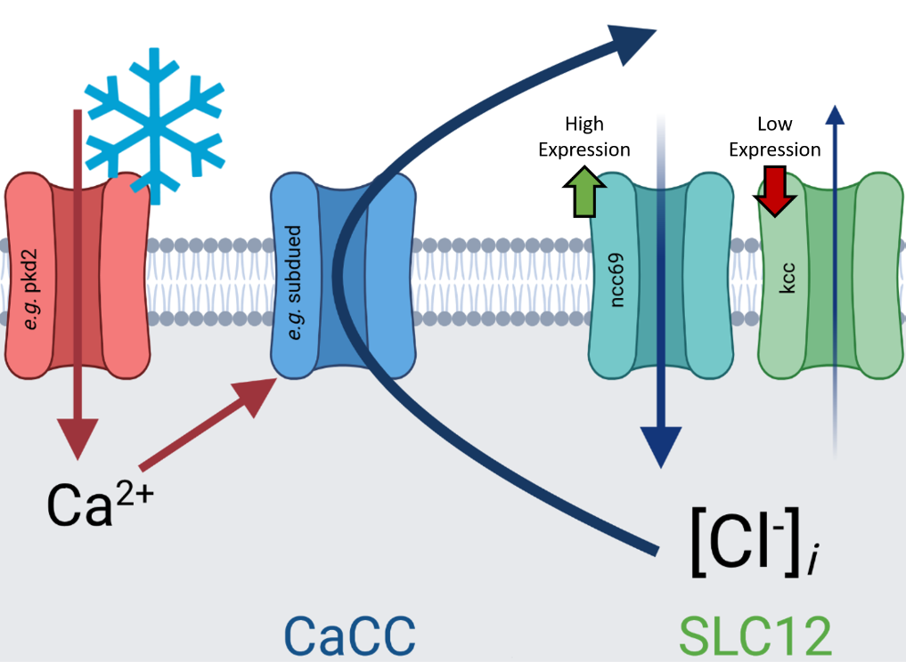
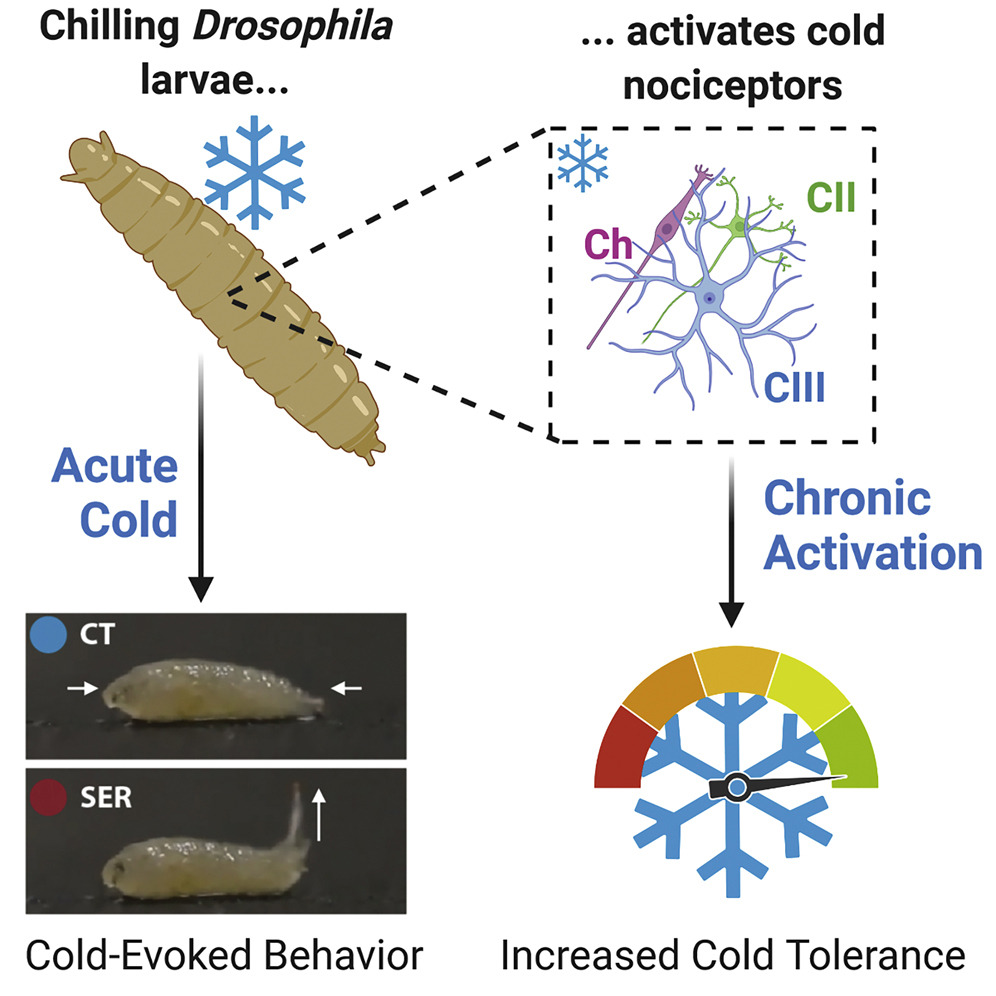
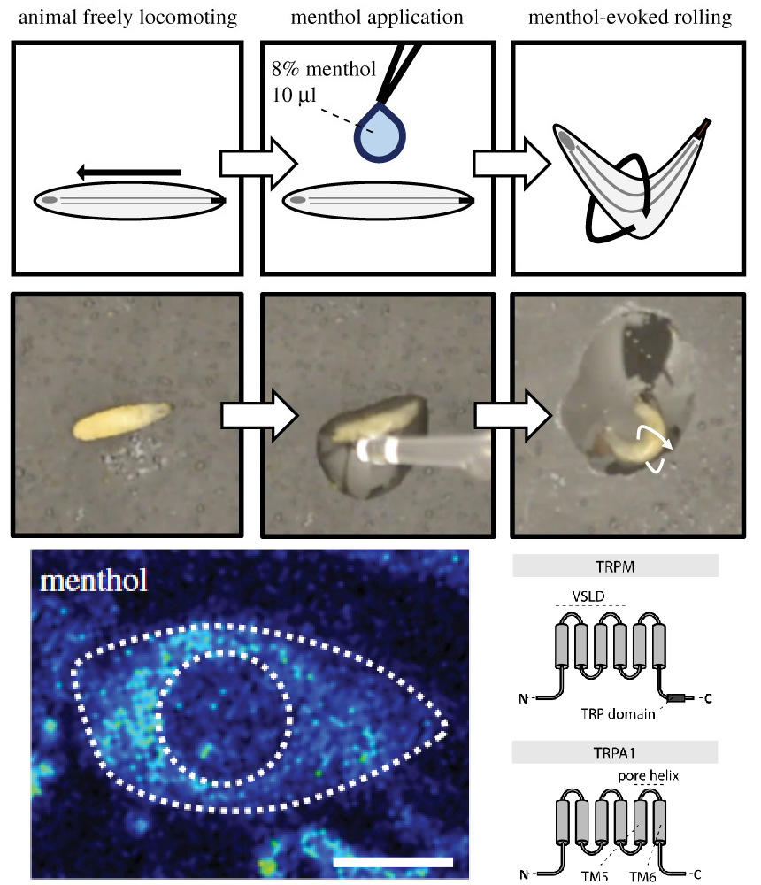

§ - Undergraduate co-author
‡ - Co-corresponding authors
-
2021
-

Chloride-dependent mechanisms of multimodal sensory discrimination and neuropathic sensitization in Drosophila
Himmel NJ, Sakurai A, Letcher JM, Patel AA, Bhattacharjee S, Benson MN§, Gray TR§, Cymbalyuk GS, and Cox DN
preprint in bioRxiv (2021)- The anoctamins subdued and white walker are required in multimodal cold/touch-sensitive CIII sensory neurons for cold nociception but not gentle touch mechanosensation.
- CIII neurons make use of excitatory chloride for discriminately encoding cold.
- Genetic overexpression of ncc69 drives a neuropathic-pain-like state in larvae, much as disregulation of NKCC1 causes neuropathic pain in humans.
-

Identification of a neural basis for cold acclimation in Drosophila larvae
Himmel NJ, Letcher JM, Sakurai A, Gray TR§, Benson MN§, Donaldson KJ, and Cox DN
iScience (2021)- The primary cold-evoked behavior among different species of drosophild larvae is the previously described bilateral contraction (CT) response.
- CT appears labile, but its incidence does not correlate with any cold-related climate variables.
- CT is largely transient, and doesn't obviously protect from noxious cold.
- Larvae from the repleta radiation perform a unique behavior deemed the Spiracle Extension Response (SER).
- Drosophila melanogaster Class III neurons are necessary for, and sensitized by, cold acclimation (increase in cold tolerance after developmental exposure).
- Cold acclimation can be initiated by optogenetically activating Class III neurons.
-
2020

Phylogenetics identifies two eumetazoan TRPM clades and an 8th family of TRP channel, TRP soromelastatin (TRPS)
Himmel NJ‡, Gray TR§, Cox DN‡
Molecular Biology and Evolution (2020)- A previously unknown family of TRP channel, called TRP soromelastatin (TRPS), is a sister clade to TRP melastatin (TRPM).
- C. elegans ced-11 is an example of a TRPS. Its inclusion in TRPS resolves long standing issues with the phylogenetic arrangement of TRPM.
- The eumetazoan TRPM family is made of 2 sub-families, αTRPM and βTRPM, not the 8 typically considered.
- TRPM1-TRPM8 are specific to vertebrates, and consistute a poor standard for undertanding the broader TRPM family.
- Click to download supplementary material.
- Click to view author correction.
-
2019
Drosophila menthol sensitivity and the Precambrian origins of TRP-dependent chemosensation
Himmel NJ‡, Letcher JM, Sakurai A, Gray TM§, Benson MN§, Cox DN‡
Philosophical Transactions of the Royal Society B (2019)- While menthol elicits cooling sensations in humans, Drosophila larvae sense menthol via high temperature/mechanical nociceptors.
- Menthol-evoked behavior is TrpA1- and Trpm-dependent, suggesting a conserved role for these sensors in menthol sensing.
- Phylogenetic analyses reveal that bilaterian TRPMs are descended from at least 3 ancestral genes.
- Ancestral sequence reconstructions suggest that some residues critical to TRP-menthol sensing are conserved from the last common ancestor of protostomes (e.g., Drosophila) and deuterostomes (e.g., humans), which existed >550 million years ago.
- Click to view supplementary material.